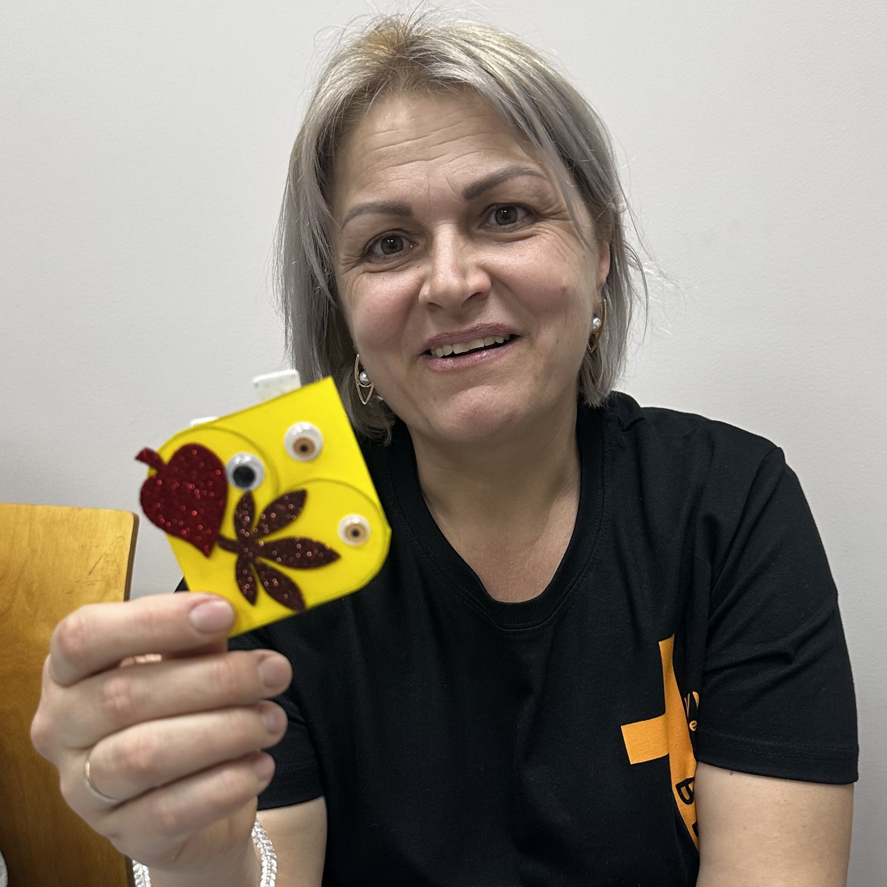

REACH
We engage young people and professionals through English Clubs and special events. We create a welcoming space to build friendships and share the Gospel through music and conversation.
We invest in the next generation, make disciples, and multiply churches across Moldova.
We engage young people and professionals through English Clubs and special events. We create a welcoming space to build friendships and share the Gospel through music and conversation.
We walk alongside new believers through small groups and one-on-one mentorship. We help them study God's Word and become committed disciples who live out their faith daily.
We empower leaders to plant home churches. Our vision is to establish one fellowship for every 1,000 people. We equip believers to open their homes and lead spiritual communities.

Hi, I'm Karina. Lena first came to our church through our refugee outreach, when Cru was distributing aid to Ukrainians. During that time, she was invited to the same church I had already been inviting her to, and she saw it as a sign from God. After that, we began meeting regularly for Bible study and discipleship lessons. Once she completed those lessons, she chose to be baptized as a public step of faith in Jesus. Today Lena is actively sharing the Gospel with others and is becoming involved in the children's ministry at our church. It is a joy to see how God can use simple invitations and faithful relationships to change a life.
— Karina